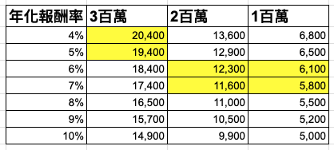

如果要定期定額 ETF，每個月該投多少錢？
關於這個大哉問，已經有很多解法。
例如六個罐子理財法，用收入的 6 / 3 / 1 來分配。
或是扣掉生活花費與緊急預備金後，剩下的錢全部投入。
各種方法都有擁護者，反正婆說婆有理，公說公有理。
今天我想請公婆讓一讓，介紹我自己的方法：
先畫靶再射箭法。
顧名思義，先把目標算出來，再回頭抓每個月要存多少。
這個方法的好處是，不會只是憑感覺設定金額。
而是先知道自己想去哪裡，再決定每個月要射出多大的箭。
先畫靶，再看箭要多大
畫靶再射箭法，我抓出三個重要金額：
6,000 元、12,000 元、20,000 元。
- 簡單關卡（Easy Mode）：每月存 6,000 元
- 中等關卡（Intermediate Mode）：每月存 12,000 元
- 進階關卡（Advanced Mode）：每月存 20,000 元
定存金額對應年化報酬率目標表
上述三個金額，是透過這張表抓出來的。

也就是看著靶，決定要設怎樣的箭。
舉例來說：
年化報酬率 5% 的情況下，要存到 300 萬，月存約 19,400 元。
年化報酬率 7% 的情況下，要存到 300 萬，月存約 17,400 元。
透過這張表，我抓出大部分人想存到第一桶金、兩桶金、三桶金時，最重要的三個關卡。
第一關：社會新鮮人，下定決心月存 6,000 元！
如果收入不高，第一個定期定額金額，我會先放在 6,000 元。
原因是，每個月存 6,000 元，如果年化報酬落在 6% 到 7%，大約十年可以靠近第一桶金。
你可能會想：
「可是選到年化報酬率 10% 的商品，月存 5,000 元就夠啦！何必多存 1,000 元？」
因為長期股市的年化報酬率，不該永遠用太樂觀的數字去估。
這幾年股市年化報酬率高，不代表它會一直持續。
所以我會用 6% 到 7% 比較保守地去抓。
如果目標是十年存到一桶金，月存 6,000 元就是很清楚的第一關。
如果未來十年股市表現仍然很好，你也能存到超過百萬。
所以，不要掙扎了。
5,000 vs 6,000 元，我選 6,000 元，也比較吉利 ＸＤ
第二關：收入提高後，往 12,000 元邁進
老實說，十年存到第一桶金，確實是有點少。
會不會太直接？
不過如果你的生活很美滿，另一半很可愛，十年存個一百萬，世界仍然充滿無限色彩，是吧？
但如果你知道自己辦不到無慾而剛，也過不了饅頭配豆漿的生活，那收入提高後，就要把月存金額一起提高。
這時候，我會把目標放到 12,000 元。
因為一旦提高到這個金額，十年的存款目標就會靠近兩桶金。
這一關的重點不是要你現在立刻做到。
而是收入提高時，不要讓生活支出自動升級，投資金額卻永遠停在原地。
薪水變高，箭也要變大支一點。
第三關：我的理想狀態是，月存 20,000 元
設定這個金額的原因很暴力又簡單。
月存 2 萬，就是十年存 300 萬的重要門票。
這個金額的好處是，你不用把所有期待都放在很高的年化報酬率上。
金額提高後，能選擇的標的也更多。
因為不用為了達標，硬去追求很高的報酬率。
這是很多人會忽略的事情。
很多人會想：
「我投入金額比較少，那我是不是要找報酬率更高的商品？」
但反過來想，其實也可以是：
「我能不能提高每月投入金額，讓自己不用那麼依賴高報酬率？」
所以我會把 20,000 元列成第三關。
十年存 300 萬，是一個可以努力靠近的狀態
十年存 300 萬，我覺得是很重要的目標。
每個人都應該要有餘裕過生活。
不是每天都在煩惱錢，也不是每次遇到突發支出就被打爆。
如果要一步一步往這個目標靠近，就是這三把箭：
- 第一把箭：6,000 元
- 第二把箭：12,000 元
- 第三把箭：20,000 元
你現在在哪一關，不重要。
重要的是知道下一關在哪裡。
如果你現在只能每月 3,000 元，也沒關係。
那就是還在熱身。
先開始，再慢慢升級。